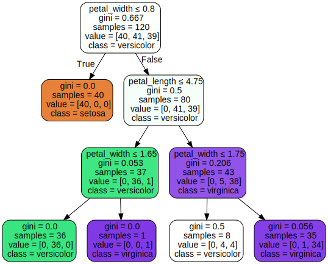

Decision Tree pada data Iris#
Apa itu Decision Tree#
Decision tree adalah algoritma machine learning yang menggunakan seperangkat aturan untuk membuat keputusan dengan struktur seperti pohon yang memodelkan kemungkinan hasil, biaya sumber daya, utilitas dan kemungkinan konsekuensi atau resiko. Konsepnya adalah dengan cara menyajikan algoritma dengan pernyataan bersyarat, yang meliputi cabang untuk mewakili langkah-langkah pengambilan keputusan yang dapat mengarah pada hasil yang menguntungkan.
Langkah 1 (Import Library yang dibutuhkan)#
import pandas as pd
import numpy as np
import matplotlib.pyplot as plt
import graphviz
from sklearn.preprocessing import LabelEncoder
from sklearn import tree
from sklearn.tree import DecisionTreeClassifier
from sklearn.model_selection import train_test_split, cross_val_score
from sklearn.metrics import accuracy_score
Langkah 2 (Import Data)#
df = pd.read_csv('https://raw.githubusercontent.com/kusumagigih/dataset/main/IrisDataset.csv')
jumlah_baris = df.shape[0]
df.head(jumlah_baris)
| sepal_length | sepal_width | petal_length | petal_width | species | |
|---|---|---|---|---|---|
| 0 | 5.1 | 3.5 | 1.4 | 0.2 | setosa |
| 1 | 4.9 | 3.0 | 1.4 | 0.2 | setosa |
| 2 | 4.7 | 3.2 | 1.3 | 0.2 | setosa |
| 3 | 4.6 | 3.1 | 1.5 | 0.2 | setosa |
| 4 | 5.0 | 3.6 | 1.4 | 0.2 | setosa |
| ... | ... | ... | ... | ... | ... |
| 145 | 6.7 | 3.0 | 5.2 | 2.3 | virginica |
| 146 | 6.3 | 2.5 | 5.0 | 1.9 | virginica |
| 147 | 6.5 | 3.0 | 5.2 | 2.0 | virginica |
| 148 | 6.2 | 3.4 | 5.4 | 2.3 | virginica |
| 149 | 5.9 | 3.0 | 5.1 | 1.8 | virginica |
150 rows × 5 columns
df_baru = df.copy()
df_baru.iloc[1,0]=None
df_baru
| sepal_length | sepal_width | petal_length | petal_width | species | |
|---|---|---|---|---|---|
| 0 | 5.1 | 3.5 | 1.4 | 0.2 | setosa |
| 1 | NaN | 3.0 | 1.4 | 0.2 | setosa |
| 2 | 4.7 | 3.2 | 1.3 | 0.2 | setosa |
| 3 | 4.6 | 3.1 | 1.5 | 0.2 | setosa |
| 4 | 5.0 | 3.6 | 1.4 | 0.2 | setosa |
| ... | ... | ... | ... | ... | ... |
| 145 | 6.7 | 3.0 | 5.2 | 2.3 | virginica |
| 146 | 6.3 | 2.5 | 5.0 | 1.9 | virginica |
| 147 | 6.5 | 3.0 | 5.2 | 2.0 | virginica |
| 148 | 6.2 | 3.4 | 5.4 | 2.3 | virginica |
| 149 | 5.9 | 3.0 | 5.1 | 1.8 | virginica |
150 rows × 5 columns
Langkah 3 (Mengecek nilai yang kosong/hilang pada data)#
#df_baru = df_baru.copy()
df_baru.isnull().sum()
sepal_length 1
sepal_width 0
petal_length 0
petal_width 0
species 0
dtype: int64
Langkah 4 (Ganti nilai yang mengandung tanda tanya menjadi nilai kosong)#
df_baru = df_baru.replace(np.nan,0.0)
df_baru
| sepal_length | sepal_width | petal_length | petal_width | species | |
|---|---|---|---|---|---|
| 0 | 5.1 | 3.5 | 1.4 | 0.2 | setosa |
| 1 | 0.0 | 3.0 | 1.4 | 0.2 | setosa |
| 2 | 4.7 | 3.2 | 1.3 | 0.2 | setosa |
| 3 | 4.6 | 3.1 | 1.5 | 0.2 | setosa |
| 4 | 5.0 | 3.6 | 1.4 | 0.2 | setosa |
| ... | ... | ... | ... | ... | ... |
| 145 | 6.7 | 3.0 | 5.2 | 2.3 | virginica |
| 146 | 6.3 | 2.5 | 5.0 | 1.9 | virginica |
| 147 | 6.5 | 3.0 | 5.2 | 2.0 | virginica |
| 148 | 6.2 | 3.4 | 5.4 | 2.3 | virginica |
| 149 | 5.9 | 3.0 | 5.1 | 1.8 | virginica |
150 rows × 5 columns
Langkah 5 (Mengecek kembali ada berapa nilai yang kosong pada data)#
df_baru.isnull().sum()
sepal_length 0
sepal_width 0
petal_length 0
petal_width 0
species 0
dtype: int64
Langkah 6 (Cek tipe data, jika bukan numerik/float, maka perlu diganti tipe datanya)#
df_baru.info()
<class 'pandas.core.frame.DataFrame'>
RangeIndex: 150 entries, 0 to 149
Data columns (total 5 columns):
# Column Non-Null Count Dtype
--- ------ -------------- -----
0 sepal_length 150 non-null float64
1 sepal_width 150 non-null float64
2 petal_length 150 non-null float64
3 petal_width 150 non-null float64
4 species 150 non-null object
dtypes: float64(4), object(1)
memory usage: 6.0+ KB
Langkah 7 (Memisahkan Fitur dan Label target)#
X = df_baru[['sepal_length', 'sepal_width', 'petal_length', 'petal_width']]
y = df_baru['species']
Langkah 8 (Membagi dataset menjadi data training dan data testing)#
X_train, X_test, y_train, y_test = train_test_split(X, y, test_size=0.2, random_state = 42)
Cara Menghitung Nilai Gini Index tanpa library#
Rumus Menghitung Nilai Gini#
![gini.png]()
def gini_impurity(y):
'''
Given a Pandas Series, it calculates the Gini Impurity.
y: variable with which calculate Gini Impurity.
'''
if isinstance(y, pd.Series):
p = y.value_counts()/y.shape[0]
gini = 1-np.sum(p**2)
return(gini)
else:
raise('Object must be a Pandas Series.')
print(gini_impurity(y_train))
print(gini_impurity(X_train.sepal_length))
0.6665277777777778
0.9590277777777778
Langkah 9 (Membuat model decision tree)#
# membuat klasifikasi Decision Tree dengan kedalaman maksimum 3 dan kriteria pemisahan (splitting) Gini impurity.
clf_gini = DecisionTreeClassifier(criterion="gini", max_depth=3, random_state=0)
# memasukkan model
clf_gini.fit(X_train, y_train)
DecisionTreeClassifier(max_depth=3, random_state=0)In a Jupyter environment, please rerun this cell to show the HTML representation or trust the notebook.
On GitHub, the HTML representation is unable to render, please try loading this page with nbviewer.org.
DecisionTreeClassifier(max_depth=3, random_state=0)
Langkah 10 (Membuat visualisasi decision tree)#
# membuat figure dengan ukuran 12x8 inch (atau sekitar 30x20 cm).
plt.figure(figsize=(12,8))
# embuat visualisasi decision tree
tree.plot_tree(clf_gini.fit(X_train, y_train))
[Text(0.375, 0.875, 'x[3] <= 0.8\ngini = 0.667\nsamples = 120\nvalue = [40, 41, 39]'),
Text(0.25, 0.625, 'gini = 0.0\nsamples = 40\nvalue = [40, 0, 0]'),
Text(0.5, 0.625, 'x[2] <= 4.75\ngini = 0.5\nsamples = 80\nvalue = [0, 41, 39]'),
Text(0.25, 0.375, 'x[3] <= 1.65\ngini = 0.053\nsamples = 37\nvalue = [0, 36, 1]'),
Text(0.125, 0.125, 'gini = 0.0\nsamples = 36\nvalue = [0, 36, 0]'),
Text(0.375, 0.125, 'gini = 0.0\nsamples = 1\nvalue = [0, 0, 1]'),
Text(0.75, 0.375, 'x[3] <= 1.75\ngini = 0.206\nsamples = 43\nvalue = [0, 5, 38]'),
Text(0.625, 0.125, 'gini = 0.5\nsamples = 8\nvalue = [0, 4, 4]'),
Text(0.875, 0.125, 'gini = 0.056\nsamples = 35\nvalue = [0, 1, 34]')]
Langkah 11 (Menampilkan visualisasi decision tree dalam bentuk grafik yang berisi informasi seperti fitur yang digunakan, nilai ambang yang digunakan dalam setiap node, dan label kelas yang dihasilkan oleh model)#
dot_data = tree.export_graphviz(clf_gini, out_file=None,
feature_names=X_train.columns,
class_names=y_train.unique(),
filled=True, rounded=True,
special_characters=True)
graph = graphviz.Source(dot_data)
graph

Langkah 12 (Menghitung akurasi decision tree)#
# menghitung akurasi pada data training
y_pred_train_gini = clf_gini.predict(X_train)
print("Accuracy on training set (Gini): {:.3f}".format(accuracy_score(y_train, y_pred_train_gini)))
# menghitung akurasi pada data testing
y_pred_gini = clf_gini.predict(X_test)
print("Accuracy on testing set (Gini): {:.3f}".format(accuracy_score(y_test, y_pred_gini)))
Accuracy on training set (Gini): 0.958
Accuracy on testing set (Gini): 1.000